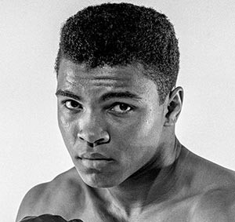
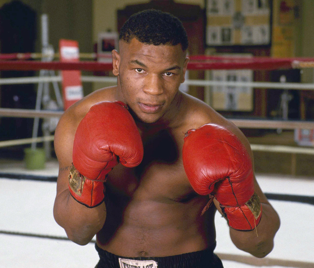
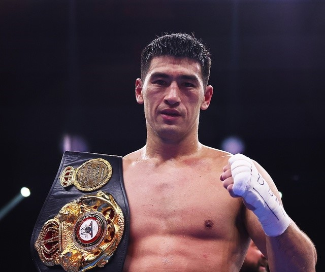
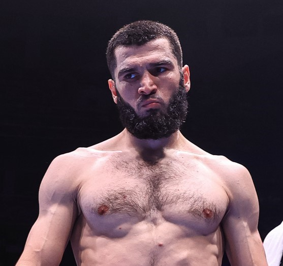
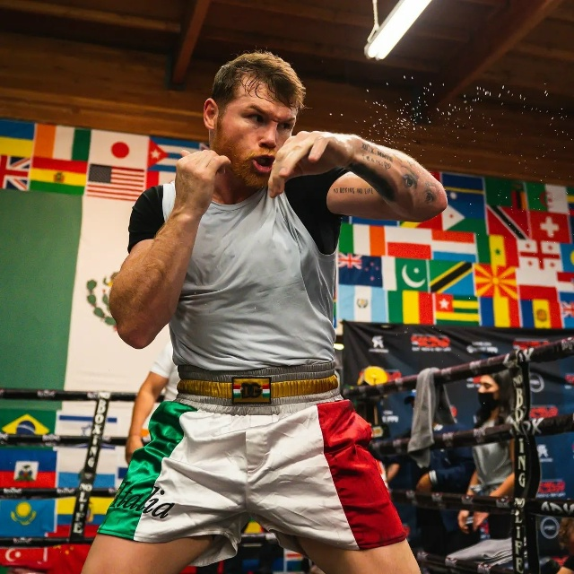
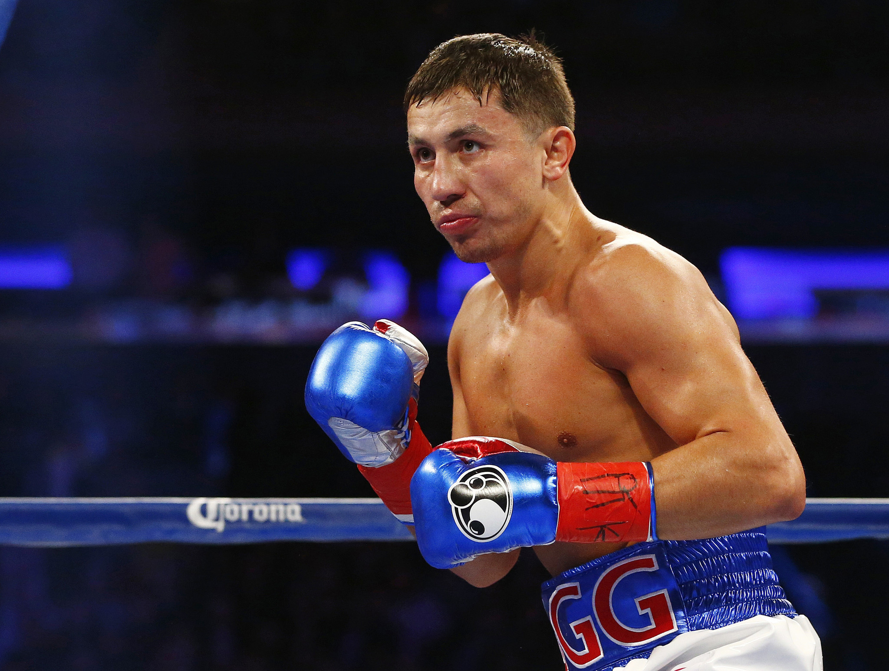

Кнопка
Кнопка
Кнопка
Кнопка
| Фото 1 | Описание фото 1 | Фото 2 | Описание фото 2 |
 |
Муха́ммед Али́ — американский боксёр-профессионал, выступавший в тяжёлой весовой категории; один из самых известных боксёров в истории мирового бокса. Олимпийский чемпион 1960 года в полутяжёлой весовой категории, абсолютный чемпион мира в тяжёлом весе. |  |
Абдулраши́д Була́чевич Садула́ев — российский борец вольного стиля, двукратный олимпийский чемпион, пятикратный чемпион мира, серебряный призёр чемпионата мира, индивидуальный кубок мира, четырёхкратный чемпион Европы, чемпион Европы среди спортсменов до 23-х лет, победитель Европейских игр, |
 |
Майкл Дже́рард Та́йсон — американский боксёр-профессионал, выступавший в тяжёлой весовой категории; один из сильнейших, самых известных и узнаваемых боксёров в истории. Победитель национальных юниорских олимпиад в первом тяжёлом весе. | Заурбе́к Казбе́кович Сида́ков — российский борец вольного стиля, олимпийский чемпион Токио 2020, трёхкратный чемпион мира, чемпион Европейских игр 2019 года, неоднократный чемпион России, заслуженный мастер спорта России | |
 |
Дми́трий Ю́рьевич Би́вол — российский и киргизский боксёр-профессионал, выступающий в полутяжёлой весовой категории. Является гражданином Кыргызстана и выступает под флагом этой страны в некоторых промоушенах с 2022 года. | Артур Геворгович Алексанян — армянский борец греко-римского стиля, олимпийский чемпион 2016 года, 4-кратный чемпион мира, 7-кратный чемпион Европы. Самый титулованный армянский спортсмен XXI века. | |
 |
Арту́р Асильбе́кович Бетерби́ев — российский и канадский боксёр-профессионал, выступающий в полутяжёлой весовой категории. Заслуженный мастер спорта России, чемпион мира и Европы, победитель Кубка мира в любителях. |  |
А́дам Хами́дович Сайти́ев — российский борец вольного стиля, Заслуженный мастер спорта России, 4-кратный чемпион России, трёхкратный чемпион Европы, двукратный чемпион мира, олимпийский чемпион 2000 года. Член сборной команды страны в 1997—2006 годах. |
 |
Сауль Альварес — мексиканский боксёр. В статусе профессионального спортсмена выходит на бои уже 20 лет. Место рождения Альвареса: Гвадалахара, Халиско, Мексика. | Мигран Эдикович Арутюнян — российский и армянский борец греко-римского стиля в весовой категории до 66 кг, боец смешанных боевых искусств, серебряный призёр летних Олимпийских игр 2016 года, чемпион России 2012 года, чемпион Армении 2013 года, вице-чемпион Европейских игр 2015 года, Мастер спорта России международного | |
 |
Геннадий Геннадьевич Головкин родился 8 апреля 1982 в Караганде. Казахстанский боксёр, Чемпион мира 2003 года и финалист Олимпийских игр 2004 года. | Рома́н Андре́евич Вла́сов — российский борец греко-римского стиля, двукратный олимпийский чемпион, трёхкратный чемпион мира и призёр чемпионата мира, четырёхкратный чемпион Европы. Заслуженный мастер спорта России. Старший лейтенант войск национальной гвардии РФ. |
- Фильмы
- Мультики
- Шрек
- Мадагаскар
- Зверополис
- Кунгфу панда
- Мулан
- Тачки
- Сериалы
- Очень странные дела
- Доктор
- Игра престолов
- Бестыжие
- Во все тяжкие
- 911
- Навигация